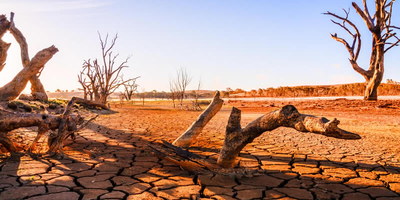
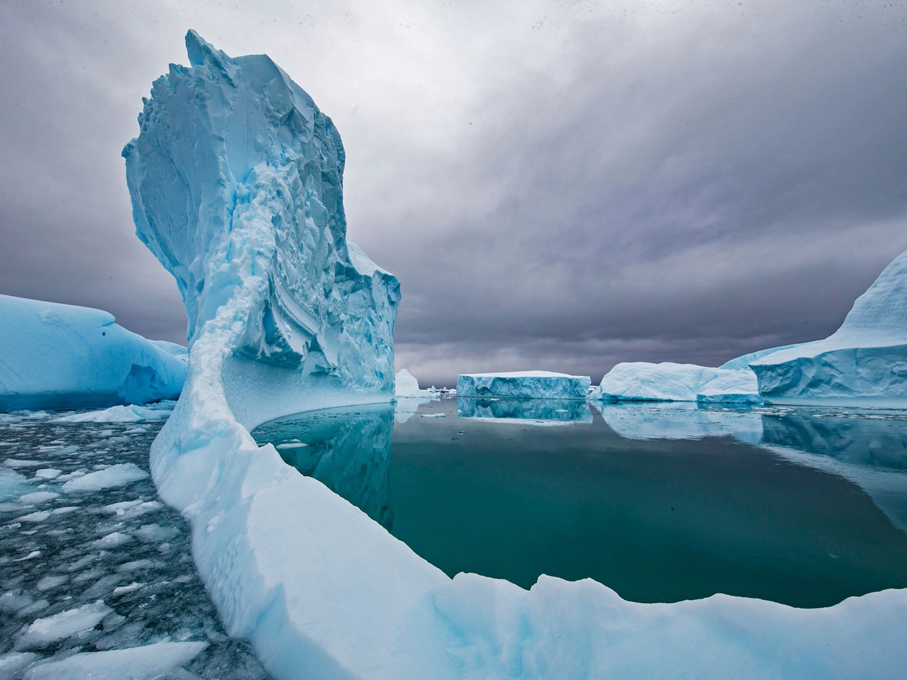
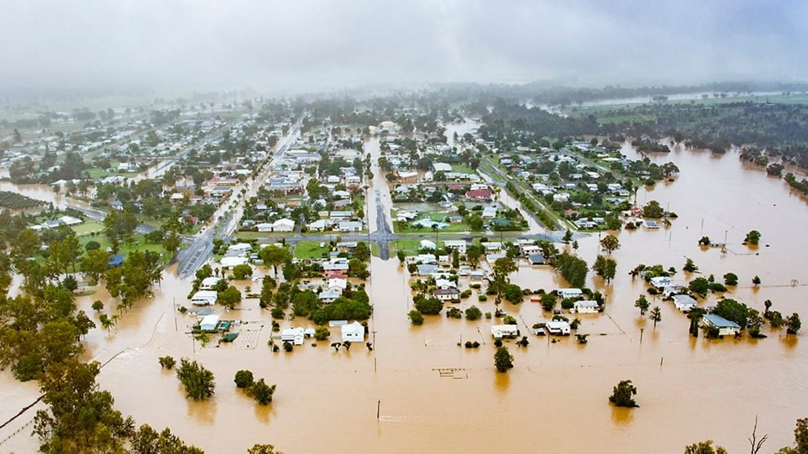
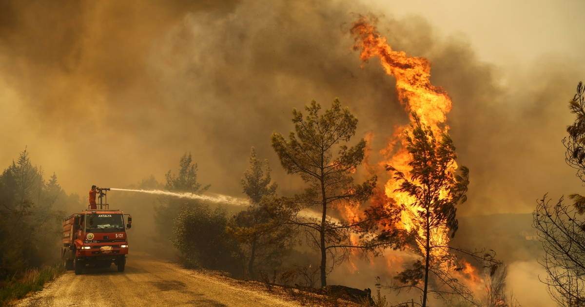

CLIMATE CHANGE IMPACT ON NATURE
Extreme weather
A key effect of climate change is extreme weather.
Rising temperatures cause heatwaves droughts, and wildfires. They also warm the atmosphere, increasing moisture – which means more rainfall, storms and flooding.
Storms and flooding are affecting many parts of the world. Even extreme cold weather is also thought to be another effect of climate change.
Fire is particularly merciless when it tears through any landscape, killing or harming thousands of species of plants and those animals unable to escape. It is estimated that the Australia fires of early 2020 killed or harmed nearly three billion animals.
Some of the fires were so enormous they even created their own weather events.
Polar and glacier ice melt and sea-level rise
Higher average global temperatures are also melting ice at the polar regions and in glaciers in mountainous regions.
In the Arctic, which now experiences heatwaves, the sea ice disappears almost entirely in summer – and the region is predicted to be completely ice-free by the mid-2030s.

Antarctic ice shelves have lost nearly 4 trillion metric tons of ice since the mid-1990s, with warming ocean waters melting them faster than they can refreeze.
Melting polar ice leads to sea-level rise around the world, which (along with increased storm surges) is starting to permanently re-shape coastal regions. This is already happening in the Arctic, the South Pacific and parts of the southern US.
Floods
Air holds 7% more water vapour for every degree Celsius it is warmed. More highly water-saturated air tends to produce heavier rains, potentially worsening flooding. A 2017 study found that peak precipitation is increasing between 5 and 10% for every
one degree Celsius increase. In the United States and many other parts of the world there has been a marked increase in intense rainfall events which have resulted in more severe flooding.

Between 1994 and 2006, satellite observations shows an 18% increase in the flow of freshwater into the world's oceans, partly from melting ice and partly from increased precipitation driven by an increase in global ocean evaporation. Much of the increase
is in areas which already experience high rainfall. One effect, as perhaps experienced in the 2010 Pakistan floods, is to overwhelm flood control infrastructure
Wildfires
Globally, climate change promotes the type of weather that makes wildfires more likely. In some areas, an increase of wildfires has been attributed directly to climate change. That warmer climate conditions pose more risks of wildfire is consistent with
evidence from Earth's past: there was more fire in warmer periods, and less in colder climatic periods.Climate change increases evaporation, which can cause vegetation to dry out.

When a fire starts in an area with very dry vegetation, it can spread rapidly. Higher temperatures can also make the fire season longer, the time period in which severe wildfires are most likely. In regions where snow is disappearing, the fire season
may get particularly more extended. Even thought weather conditions are raising the risks of wildfires, the total area burnt by wildfires has decreased globally. This is mostly the result of the conversion of savanna into croplands,
so that there is less forest area that can burn. Prescribed burning, an indigenous practice in the US and Australia, can reduce the area burnt too, and may form an adaptation to increased risk. The carbon released from wildfires can
further increase greenhouse gas concentrations. This feedback is not yet fully integrated into climate models.